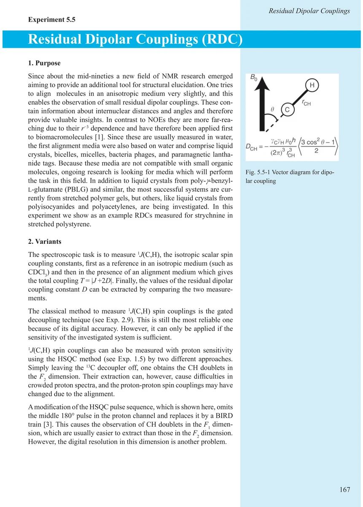
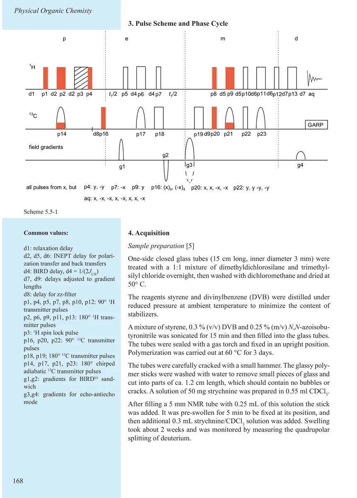
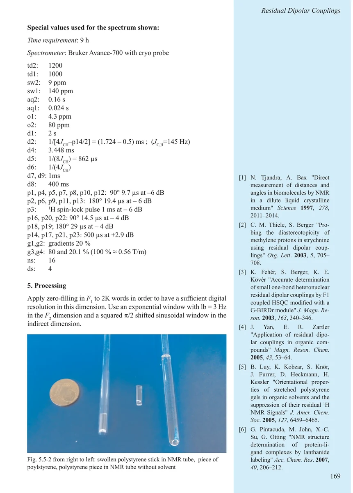
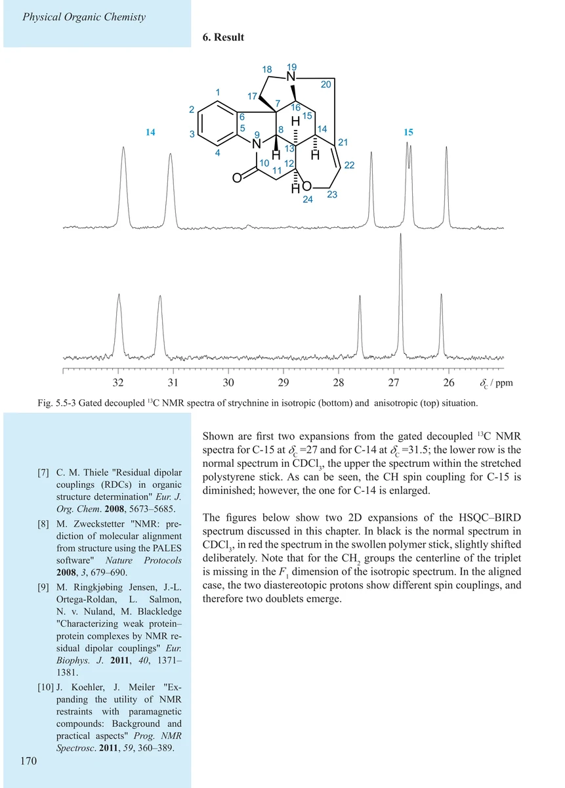
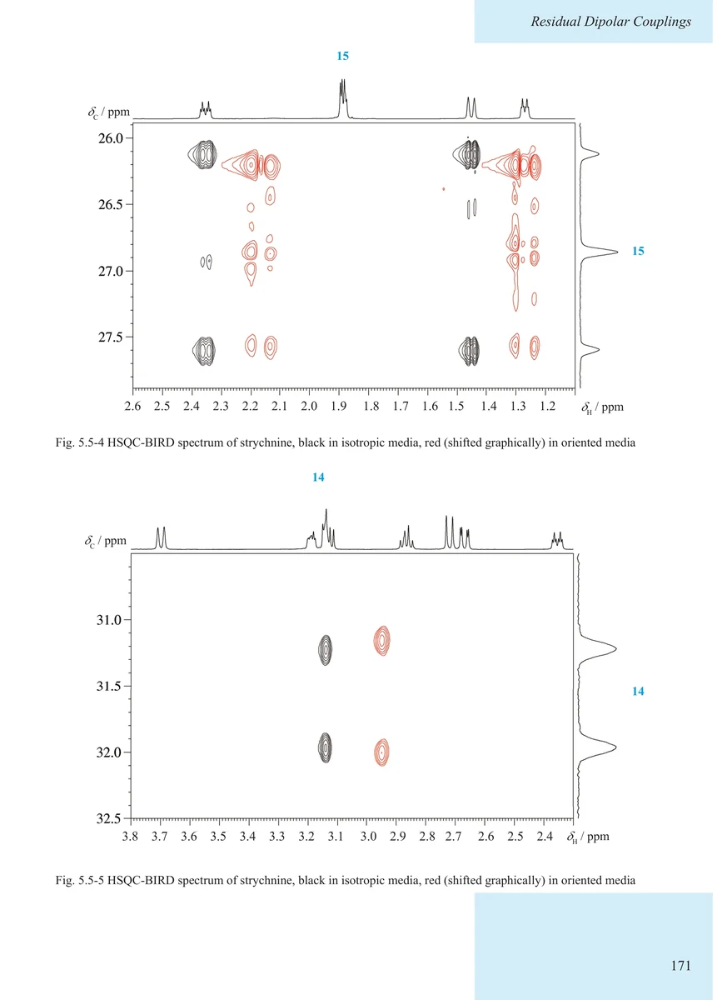
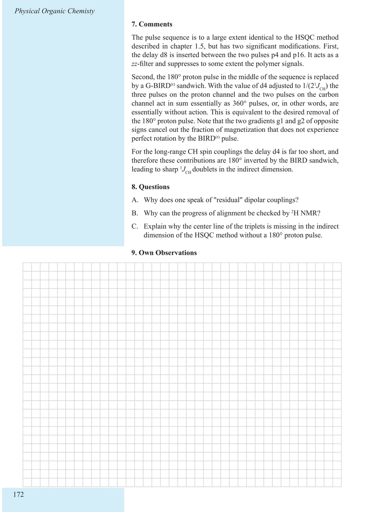

Item 5.5
Residual Dipolar Couplings (RDC)
残余偶极耦合（RDC）
PDF 177–182 · 原书 167–172 · Experiments in Physical Organic Chemistry






核磁共振实验方法、脉冲序列与谱图实践
Item 5.5
残余偶极耦合（RDC）
PDF 177–182 · 原书 167–172 · Experiments in Physical Organic Chemistry





